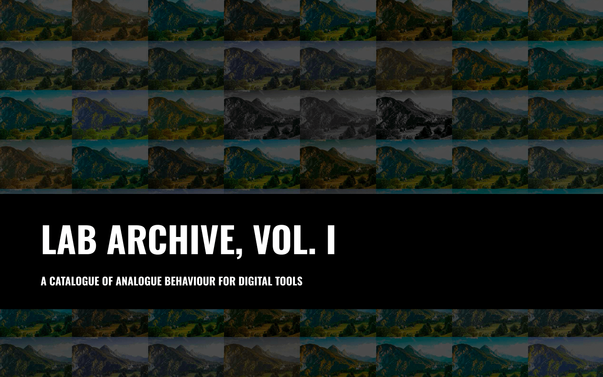

Lab Archive, Vol. I is a deliberately curated ledger of looks drawn from the culture of consumer film, professional slide stocks, and the stray accidents that defined print-lab history.
The intent is not nostalgia for its own sake, but a faithful cataloguing of palette, contrast behaviour, and tonal rolloff as they were commonly seen in the wild.
Each filter is treated like an indexed process: a known response under daylight, tungsten, and mixed light; a recognizable bias in greens, skies, and skin.
You are not buying a fantasy. You are acquiring a set of working behaviors you can call on with precision.
Within the set you will find three families: everyday consumer color with characteristic warmth and scan bias; professional slide and negative references built for clarity and controlled saturation; and monochrome treatments that prioritize density, texture, and separation.
Used well, these looks disappear into the work, the way a reliable stock disappears into a photographer's muscle memory.
Best practice mirrors the darkroom: expose with intent, compose for contrast, and decide whether you need separation or mercy in the mids.
This volume is a reference shelf-quiet, exact, and prepared for field use.